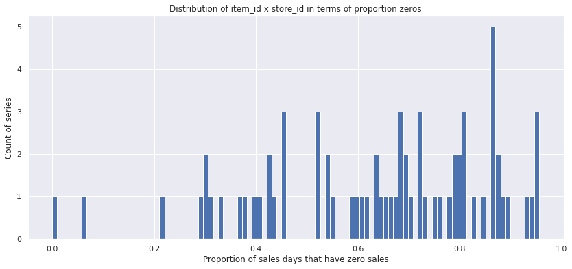
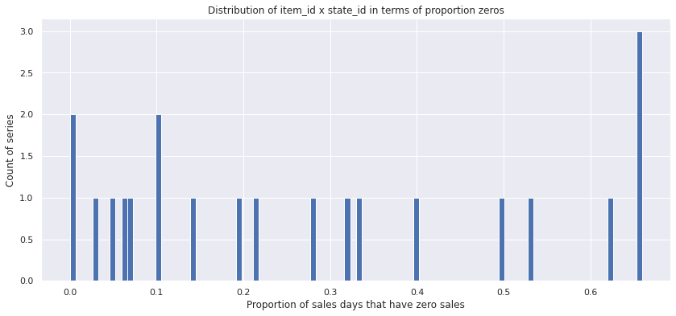
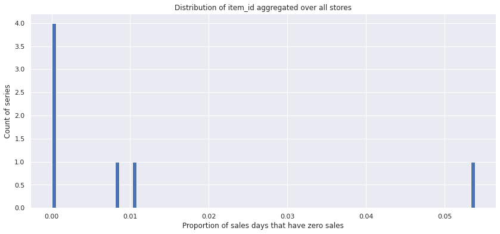
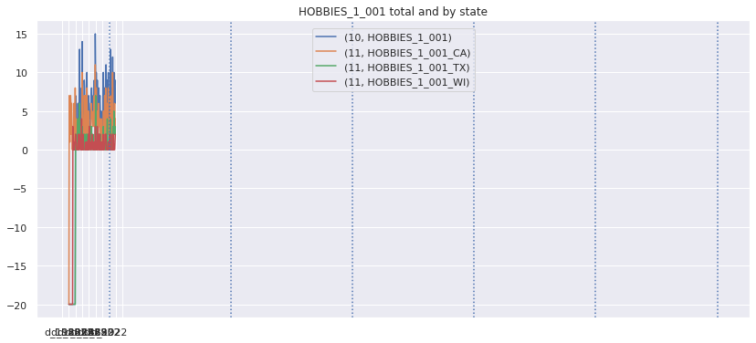
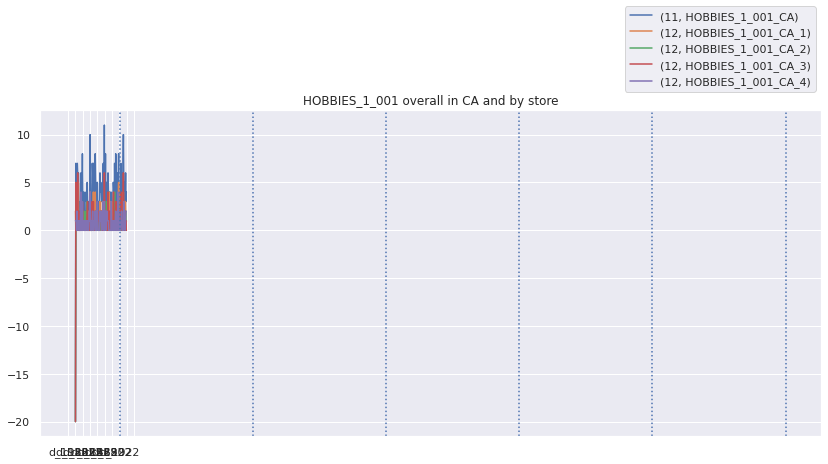
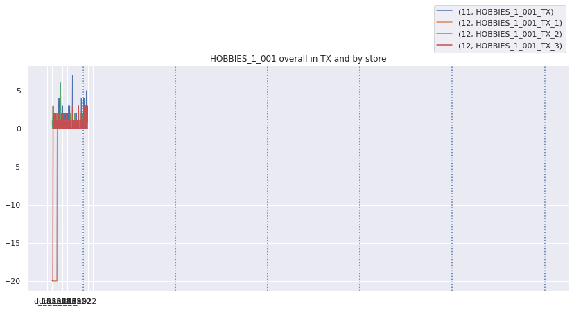
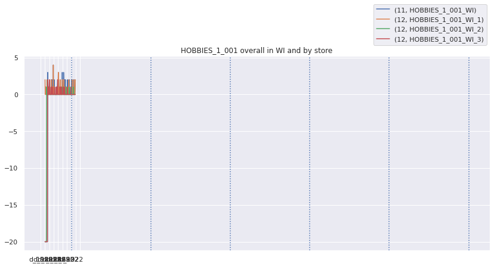
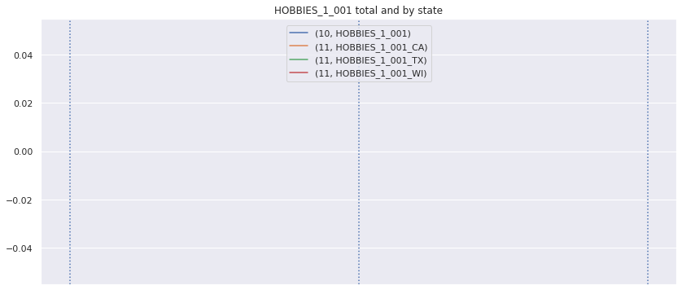
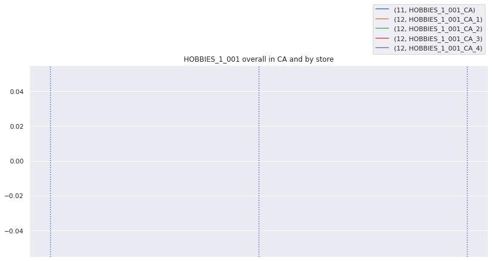
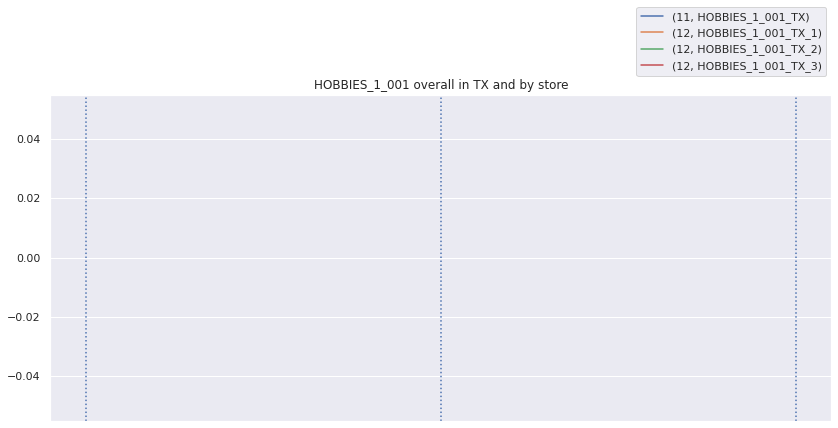

# sns.set()
plt.rcParams['figure.figsize'] = (14,6)
plt.rcParams['font.size'] = 16# For fast testing for Continuous Integration
PATH_DATA = 'data'
PATH_DATA_RAW = 'data/raw'
os.listdir(PATH_DATA_RAW)# PATH_DATA = '../../data'
# PATH_DATA_RAW = '../../data/raw'
# os.listdir(PATH_DATA_RAW)['sample_submission.csv',
'sell_prices.csv',
'calendar.csv',
'sales_train_evaluation.csv']################## Load data ####################
chunks = pd.read_csv(os.path.join(PATH_DATA_RAW, 'sales_train_evaluation.csv'), chunksize=1000)
df_stv = pd.concat(list(chunks)) # Safe for low RAM situation
df_cal = pd.read_csv(os.path.join(PATH_DATA_RAW, 'calendar.csv'))
df_prices = pd.read_csv(os.path.join(PATH_DATA_RAW, 'sell_prices.csv'))
df_ss = pd.read_csv(os.path.join(PATH_DATA_RAW, 'sample_submission.csv'))Total sales for all series of aggregation
get_stats_df
get_stats_df (series_df)
Returns a dataframe that shows basic stats for all series in sereis_df.
get_series_df
get_series_df (train_df, rollup_matrix_csr, rollup_index, df_cal=None, fill_xmas=False)
Returns a dataframe with series for all 12 levels of aggregation. We also replace leading zeros with np.nan and if fill_xmas, replace christmas sales with average of the day before and day after christmas
rollup_matrix_csr, rollup_index = get_agg(df_stv)
series_df = get_series_df(df_stv, rollup_matrix_csr, rollup_index, df_cal=df_cal, fill_xmas=True)
stats_df = get_stats_df(series_df)
w_df = get_df_weights(df_stv, df_cal, df_prices, rollup_index, rollup_matrix_csr, start_test=1914)/home/c/crm_build/w/chrisrichardmiles/projects/m5/chrisrichardmiles/m5/metric.py:118: RuntimeWarning: Mean of empty slice
scale = np.nanmean(np.diff(agg_series, axis=1) ** 2, axis=1)series_df| d_1802 | d_1803 | d_1804 | d_1805 | d_1806 | d_1807 | d_1808 | d_1809 | d_1810 | d_1811 | ... | d_1932 | d_1933 | d_1934 | d_1935 | d_1936 | d_1937 | d_1938 | d_1939 | d_1940 | d_1941 | ||
|---|---|---|---|---|---|---|---|---|---|---|---|---|---|---|---|---|---|---|---|---|---|---|
| level | id | |||||||||||||||||||||
| 1 | Total | NaN | NaN | NaN | NaN | NaN | NaN | NaN | NaN | NaN | NaN | ... | NaN | NaN | NaN | NaN | NaN | NaN | NaN | NaN | NaN | 53.0 |
| 2 | CA | NaN | NaN | NaN | NaN | NaN | NaN | NaN | NaN | NaN | NaN | ... | 22.0 | 30.0 | 26.0 | 16.0 | 12.0 | 16.0 | 20.0 | 25.0 | 24.0 | 32.0 |
| TX | NaN | NaN | NaN | NaN | NaN | NaN | NaN | NaN | NaN | NaN | ... | NaN | NaN | NaN | NaN | NaN | NaN | NaN | 12.0 | 12.0 | 11.0 | |
| WI | NaN | NaN | NaN | NaN | NaN | NaN | NaN | NaN | NaN | NaN | ... | NaN | NaN | NaN | NaN | NaN | NaN | NaN | NaN | NaN | 10.0 | |
| 3 | CA_1 | NaN | NaN | NaN | NaN | NaN | NaN | NaN | NaN | NaN | 6.0 | ... | 7.0 | 10.0 | 4.0 | 4.0 | 2.0 | 0.0 | 6.0 | 7.0 | 3.0 | 7.0 |
| ... | ... | ... | ... | ... | ... | ... | ... | ... | ... | ... | ... | ... | ... | ... | ... | ... | ... | ... | ... | ... | ... | ... |
| 12 | HOUSEHOLD_2_001_TX_2 | NaN | NaN | NaN | NaN | NaN | NaN | NaN | NaN | NaN | NaN | ... | 0.0 | 0.0 | 0.0 | 0.0 | 0.0 | 0.0 | 0.0 | 0.0 | 0.0 | 0.0 |
| HOUSEHOLD_2_001_TX_3 | NaN | NaN | NaN | NaN | NaN | NaN | NaN | NaN | NaN | NaN | ... | 0.0 | 0.0 | 0.0 | 1.0 | 1.0 | 0.0 | 0.0 | 0.0 | 0.0 | 0.0 | |
| HOUSEHOLD_2_001_WI_1 | NaN | NaN | NaN | NaN | NaN | 1.0 | 1.0 | 0.0 | 0.0 | 0.0 | ... | 0.0 | 0.0 | 1.0 | 0.0 | 0.0 | 0.0 | 1.0 | 0.0 | 0.0 | 0.0 | |
| HOUSEHOLD_2_001_WI_2 | NaN | NaN | NaN | NaN | NaN | NaN | NaN | 1.0 | 0.0 | 0.0 | ... | 0.0 | 0.0 | 0.0 | 2.0 | 0.0 | 0.0 | 0.0 | 0.0 | 0.0 | 0.0 | |
| HOUSEHOLD_2_001_WI_3 | NaN | NaN | NaN | NaN | 1.0 | 0.0 | 0.0 | 0.0 | 0.0 | 0.0 | ... | 0.0 | 0.0 | 2.0 | 0.0 | 0.0 | 0.0 | 0.0 | 0.0 | 1.0 | 0.0 |
252 rows × 140 columns
How many zeros do series have?
Lets first take a look at the distribution of the zeros fraction of total sales for the level 12 series.
df = stats_df.loc[12]
df.fraction_0.hist(bins=100)
plt.title('Distribution of item_id x store_id in terms of proportion zeros')
plt.xlabel('Proportion of sales days that have zero sales')
plt.ylabel('Count of series')
plt.show()
df = stats_df.loc[11]
df.fraction_0.hist(bins=100)
plt.title('Distribution of item_id x state_id in terms of proportion zeros')
plt.xlabel('Proportion of sales days that have zero sales')
plt.ylabel('Count of series')
plt.show()
df = stats_df.loc[10]
df.fraction_0.hist(bins=100)
plt.title('Distribution of item_id aggregated over all stores')
plt.xlabel('Proportion of sales days that have zero sales')
plt.ylabel('Count of series')
plt.show()
Plotting item sales for different levels of aggregation
plot_all_item_series
plot_all_item_series (item, series_df, fillna=False, start=0, end=1941)
plot_item_series
plot_item_series (item, series_df, state=None, fillna=False, start=0, end=1941)
Plots the level 10-12 series containing the item
Lets look at the top weighted items and their zero sales streaks over different aggregation levels. We will fill nan values with -20 so they stand out
top_weighted_items = w_df.loc[10].sort_values('weight', ascending=False).indexplot_all_item_series(top_weighted_items[0], series_df, fillna=-20)



There are definitely streaks of zero sales that do not look natural. I
Detecting and marking out-of-stock periods
Main functions
mark_streaks
mark_streaks (ts)
Returns an array of the same length as ts, except positive values are replaced by zero, and zeros are replaced by the lenth of the zero streak to which they belong.
Example
in
series = np.array([np.nan,3,0,0,0,2,0,0,1,0]) mark_streaks(series)
out
array([nan, 0., 3., 3., 3., 0., 2., 2., 0., 1.])
nan_zeros
nan_zeros (item_series, item_mean)
Returns item_series with streaks replaced by nans, the new average of item series, and max_streak_length, which is the highest streak count that was not replaced with nans.
fix_oos
fix_oos (item, series_df)
Processes item and returns series that has np.nan where we think out of stock zeros occur
Main command line function
make_oos_data
make_oos_data (PATH_DATA_RAW:str<Pathtorawdata>='data/raw', PATH_DATA_INTERIM:str<Pathtointerimdata>='data/interim')
Creates 2 csv files and stores them in the PATH_DATA_INTERIM.
The first file is of all time series in the aggregation levels 10, 11, and 12, stored as ‘oos_series_df_level_10_11_12.csv’.
The second file, ‘oos_sales_train_evaluation.csv’, has the same format as ‘sales_train_evaluation.csv’, except zero streaks that are believed to be caused by a stock-out are marked with nan.
make_oos_data(os.path.join(PATH_DATA, 'raw'), os.path.join(PATH_DATA, 'interim')) d_1802 d_1803 d_1804 d_1805 d_1806 d_1807 \
id
FOODS_1_001_CA_1_evaluation 1.0 0.0 0.0 0.0 3.0 0.0
FOODS_1_001_CA_2_evaluation 1.0 6.0 0.0 0.0 1.0 2.0
d_1808 d_1809 d_1810 d_1811 ... d_1932 \
id ...
FOODS_1_001_CA_1_evaluation 0.0 0.0 0.0 2.0 ... 2.0
FOODS_1_001_CA_2_evaluation 2.0 0.0 0.0 0.0 ... 1.0
d_1933 d_1934 d_1935 d_1936 d_1937 d_1938 \
id
FOODS_1_001_CA_1_evaluation 3.0 1.0 0.0 0.0 0.0 1.0
FOODS_1_001_CA_2_evaluation 0.0 0.0 1.0 1.0 0.0 0.0
d_1939 d_1940 d_1941
id
FOODS_1_001_CA_1_evaluation 0.0 0.0 0.0
FOODS_1_001_CA_2_evaluation 1.0 2.0 0.0
[2 rows x 140 columns]
id item_id dept_id cat_id store_id state_id \
0 FOODS_1_001_CA_1_evaluation FOODS_1_001 FOODS_1 FOODS CA_1 CA
1 FOODS_1_001_CA_2_evaluation FOODS_1_001 FOODS_1 FOODS CA_2 CA
d_1802 d_1803 d_1804 d_1805 ... d_1932 d_1933 d_1934 d_1935 \
0 1.0 0.0 0.0 0.0 ... 2.0 3.0 1.0 0.0
1 1.0 6.0 0.0 0.0 ... 1.0 0.0 0.0 1.0
d_1936 d_1937 d_1938 d_1939 d_1940 d_1941
0 0.0 0.0 1.0 0.0 0.0 0.0
1 1.0 0.0 0.0 1.0 2.0 0.0
[2 rows x 146 columns]/tmp/ipykernel_21690/2233498255.py:81: DeprecationWarning: `np.object` is a deprecated alias for the builtin `object`. To silence this warning, use `object` by itself. Doing this will not modify any behavior and is safe.
Deprecated in NumPy 1.20; for more details and guidance: https://numpy.org/devdocs/release/1.20.0-notes.html#deprecations
a = accum_add_prod.accumulate(zeros, dtype=np.object)oos_series_df = pd.read_csv(os.path.join(PATH_DATA, 'interim/oos_series_df_level_10_11_12.csv')).set_index(['level', 'id'])
pd.read_csv(os.path.join(PATH_DATA, 'interim/oos_sales_train_evaluation.csv'))| id | item_id | dept_id | cat_id | store_id | state_id | d_1802 | d_1803 | d_1804 | d_1805 | ... | d_1932 | d_1933 | d_1934 | d_1935 | d_1936 | d_1937 | d_1938 | d_1939 | d_1940 | d_1941 | |
|---|---|---|---|---|---|---|---|---|---|---|---|---|---|---|---|---|---|---|---|---|---|
| 0 | FOODS_1_001_CA_1_evaluation | FOODS_1_001 | FOODS_1 | FOODS | CA_1 | CA | NaN | NaN | NaN | NaN | ... | NaN | NaN | NaN | NaN | NaN | NaN | NaN | NaN | NaN | NaN |
| 1 | FOODS_1_001_CA_2_evaluation | FOODS_1_001 | FOODS_1 | FOODS | CA_2 | CA | NaN | NaN | NaN | NaN | ... | NaN | NaN | NaN | NaN | NaN | NaN | NaN | NaN | NaN | NaN |
| 2 | FOODS_1_001_CA_3_evaluation | FOODS_1_001 | FOODS_1 | FOODS | CA_3 | CA | NaN | NaN | NaN | NaN | ... | NaN | NaN | NaN | NaN | NaN | NaN | NaN | NaN | NaN | NaN |
| 3 | FOODS_1_001_CA_4_evaluation | FOODS_1_001 | FOODS_1 | FOODS | CA_4 | CA | NaN | NaN | NaN | NaN | ... | NaN | NaN | NaN | NaN | NaN | NaN | NaN | NaN | NaN | NaN |
| 4 | FOODS_1_001_TX_1_evaluation | FOODS_1_001 | FOODS_1 | FOODS | TX_1 | TX | NaN | NaN | NaN | NaN | ... | NaN | NaN | NaN | NaN | NaN | NaN | NaN | NaN | NaN | NaN |
| ... | ... | ... | ... | ... | ... | ... | ... | ... | ... | ... | ... | ... | ... | ... | ... | ... | ... | ... | ... | ... | ... |
| 65 | HOUSEHOLD_2_001_TX_2_evaluation | HOUSEHOLD_2_001 | HOUSEHOLD_2 | HOUSEHOLD | TX_2 | TX | NaN | NaN | NaN | NaN | ... | NaN | NaN | NaN | NaN | NaN | NaN | NaN | NaN | NaN | NaN |
| 66 | HOUSEHOLD_2_001_TX_3_evaluation | HOUSEHOLD_2_001 | HOUSEHOLD_2 | HOUSEHOLD | TX_3 | TX | NaN | NaN | NaN | NaN | ... | NaN | NaN | NaN | NaN | NaN | NaN | NaN | NaN | NaN | NaN |
| 67 | HOUSEHOLD_2_001_WI_1_evaluation | HOUSEHOLD_2_001 | HOUSEHOLD_2 | HOUSEHOLD | WI_1 | WI | NaN | NaN | NaN | NaN | ... | NaN | NaN | NaN | NaN | NaN | NaN | NaN | NaN | NaN | NaN |
| 68 | HOUSEHOLD_2_001_WI_2_evaluation | HOUSEHOLD_2_001 | HOUSEHOLD_2 | HOUSEHOLD | WI_2 | WI | NaN | NaN | NaN | NaN | ... | NaN | NaN | NaN | NaN | NaN | NaN | NaN | NaN | NaN | NaN |
| 69 | HOUSEHOLD_2_001_WI_3_evaluation | HOUSEHOLD_2_001 | HOUSEHOLD_2 | HOUSEHOLD | WI_3 | WI | NaN | NaN | NaN | NaN | ... | NaN | NaN | NaN | NaN | NaN | NaN | NaN | NaN | NaN | NaN |
70 rows × 146 columns
Visualizing out of stock periods
plot_all_item_series(top_weighted_items[0], oos_series_df, fillna=-50, start=999)

